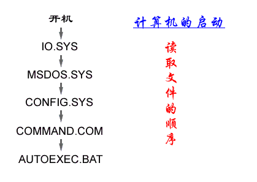

电脑刚启动时，要先从某个磁盘上将一些系统程序读入内存后才能正常工作，我们将这个磁盘叫做启动盘。
通常，我们用A盘或C盘作为启动盘，在特殊情况下，硬盘的其它盘符和少数电脑的光盘也可以作启动盘。制作启动盘需要使用sys命令，可以参看后面的命令部分。

DOS系统启动时，要先从启动盘中读取两个系统文件IO.SYS、MSDOS.SYS，然后在启动盘的根目录下寻找并执行 CONFIG.SYS、COMMAND.COM、AUTOEXEC.BAT三个文件。其中IO.SYS、MSDOS.SYS和 COMMAND.COM这三个文件缺一不可，否则电脑将无法正常启动
CONFIG.SYS和AUTOEXEC.BAT这两个文件是用来配置系统运行环境和自动执行一些命令，它们对电脑的运行性能以及许多设备的驱动起到了至关重要的作用，我们可以根据自己的需要对它们的内容进行修改,
autoexec.bat叫做自动批处理文件，它是批处理文件的一种，因为DOS启动时会自动运行它，所以叫做自动批处理文件。你可以把自己每次启动电脑时都要运行的程序放在里面。
如果电脑在根目录下找不到这两个文件，也是可以运行的，但有许多复杂的软件和设备将无法正常工作。比如光驱、声卡以及Windows程序等。所以，初学者应注意不要将上面的几个文件删除，否则，电脑将不能正常工作。